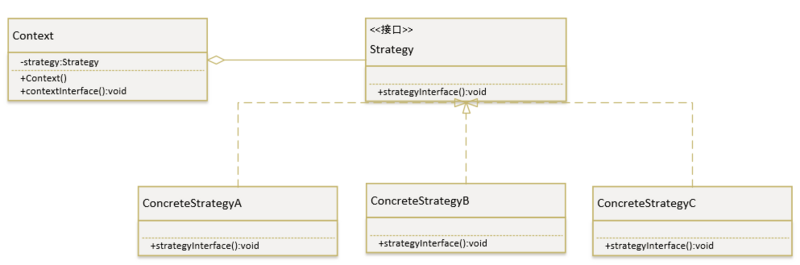
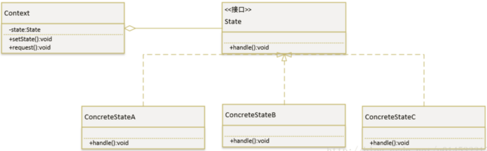

什么叫表驱动法 表驱动法，又称之为表驱动、表驱动方法。“表”是几乎所有数据结构课本都要讨论的非常有用的数据结构。表驱动方法出于特定的目的来使用表，程序员们经常谈到“表驱动”方法，但是课本中却从未提到过什么是“表驱动”方法。来自 Google 的解释：表驱动法是一种编程模式，它的本质是，从表里查询信息来代替逻辑语句（if,case）。
先来看个案例：
通过月份来获取当月的天数（仅作为案例演示，获取2月份的数据不严谨），普通做法：
1 2 3 4 5 6 7 8 9 10 11 12 13 14 15 16 17 int getMonthDays (int month) switch (month){ case 1 :return 31 ;break ; case 2 :return 29 ;break ; case 3 :return 31 ;break ; case 4 :return 30 ;break ; case 5 :return 31 ;break ; case 6 :return 30 ;break ; case 7 :return 31 ;break ; case 8 :return 31 ;break ; case 9 :return 30 ;break ; case 10 :return 31 ;break ; case 11 :return 30 ;break ; case 12 :return 31 ;break ; default ：return 0 ; } }
表驱动法实现方式：
1 2 3 4 int monthDays[12 ] = {31 , 29 , 31 , 30 , 31 , 30 , 31 , 31 , 30 , 31 , 30 , 31 };int getMonthDays (int month) return monthDays[--month]; }
其实这里的表就是数组而已，通过直接查询数组来获得需要的数据，那么同理，Map 之类的容器也可以成为我们编程概念中的表。
1 2 3 4 5 6 7 8 9 Map<?, Function<?> action> actionsMap = new HashMap<>(); actionsMap.put(value1, (someParams) -> { doAction1(someParams)}); actionsMap.put(value2, (someParams) -> { doAction2(someParams)}); actionsMap.put(value3, (someParams) -> { doAction3(someParams)}); actionsMap.get(param).apply(someParams);
通过 Java8 的 lambda 表达式，我们把需要执行东西存进 value 中，调用的时候通过匹配 key 的方式进行。
表驱动法最终的目的，其实就是对复杂的逻辑进行代码优化。随着项目的迭代，代码中存在的分支判断可能会越来越多，当里面涉及到的逻辑比较复杂或者分支数量实在是多的难以维护的时候，我们就要考虑下，有什么办法能让这些代码变得更优雅吗？上文中给出的表驱动法就是很好方法之一，那么还有哪些方法呢，接下来就让我们一起来看看。
使用枚举 这里我们简单的定义一个表示状态的枚举。
1 2 3 4 5 6 7 8 9 public enum Status { NEW(0 ),RUNNABLE(1 ),RUNNING(2 ),BLOCKED(3 ),DEAD(4 ); public int statusCode; Status(int statusCode){ this .statusCode = statusCode; } }
那么我们在使用的时候就可以直接通过枚举调用了。
1 int statusCode = Status.valueOf("NEW" ).statusCode;
优雅的解决了下面代码赋值的方式：
1 2 3 4 5 6 if (param.equals("NEW" )){ statusCode = 0 ; }else if (param.equals("RUNNABLE" )){ statusCode = 1 ; } ...
善用 Optional 在项目中，总少不了一些非空的判断,可能大部分人还是如下的用法。
1 2 3 4 5 if (null == user){ }else { }
这时候该掏出 Optional 这个秘密武器了，它可以让非空校验更加优雅，间接的减少 if 操作。没了解过 Optional 的同学可自行 Google，这里就不再赘述。
1 2 3 Optional<User> userOptional = Optional.ofNullable(user); userOptional.map(action1).orElse(action2);
上面的代码跟第一段是等效的，通过一些新特性让代码更加紧凑。
提前判断返回 提前判断返回：其实也可以理解为卫语句，卫语句就是把复杂的条件表达式拆分成多个条件表达式，比如一个很复杂的表达式，嵌套了好几层的 if-then-else 语句，转换为多个 if 语句，实现它的逻辑，这多条的 if 语句就是卫语句。最终要达到的目的就是提前判断返回。
1 2 3 4 5 if (condition){ }else { return ; }
改为
1 2 3 4 if (!condition){ return ; }
避免一些不必要的分支，让代码更精炼。
设计模式 除了上面提到的方法，我们还可以通过一些设计模式，例如策略模式，状态模式等来优化存在大量 if，case 的情况，其原理会和表驱动的模式比较相似。
策略模式 使用策略模式可以代替多重 if-else 和 switch-case 语句，让代码维护变得更加简单。
策略模式 UML：

说明：
环境（Context）角色：持有一个 Strategy 的引用。
抽象策略（Strategy）角色：这是一个抽象角色，通常由一个接口或抽象类实现。
具体策略（ConcreteStrategy）角色：包装了相关的算法或行为。
策略模式代码模板：
1 2 3 4 5 6 7 8 9 10 11 12 13 14 15 16 17 18 19 20 21 22 23 24 25 public class Context private Strategy strategy; public Context (Strategy strategy) this .strategy = strategy; } public void contextInterface () strategy.strategyInterface(); } }
1 2 3 4 5 6 7 8 9 10 public interface Strategy void strategyInterface () }
1 2 3 4 5 6 7 8 9 10 public class ConcreteStrategyA implements Strategy @Override public void strategyInterface () } }
1 2 3 4 5 6 7 8 9 10 public class ConcreteStrategyB implements Strategy @Override public void strategyInterface () } }
1 2 3 4 5 6 7 8 9 10 public class ConcreteStrategyC implements Strategy @Override public void strategyInterface () } }
实例应用：
水果有不同种类，每种水果对应不同价格，用策略模式实现。
1 2 3 4 5 6 7 8 9 10 public interface Fruit void price () }
1 2 3 4 5 6 7 8 9 10 public class Apple implements Fruit @Override public void price () System.out.println("苹果的价格！" ); } }
1 2 3 4 5 6 7 8 9 10 public class Banana implements Fruit @Override public void price () System.out.println("香蕉的价格！" ); } }
1 2 3 4 5 6 7 8 9 10 public class Pear implements Fruit @Override public void price () System.out.println("梨的价格！" ); } }
1 2 3 4 5 6 7 8 9 10 11 12 13 14 15 16 17 18 19 20 21 22 23 24 25 public class FruitPrice private Fruit fruit; public FruitPrice (Fruit fruit) this .fruit = fruit; } public void printFruitPrice () fruit.price(); } }
客户端：
1 2 3 4 5 6 7 8 9 public static void useStrategy () Fruit apple = new Apple(); new FruitPrice(apple).printFruitPrice(); }
状态模式 状态模式 UML：

说明：
环境（Context）角色，也称上下文：定义客户端所感兴趣的接口，并且保留一个具体状态类的实例。这个具体状态类的实例给出此环境对象的现有状态。
抽象状态（State）角色：定义一个接口，用以封装环境（Context）对象的一个特定的状态所对应的行为。
具体状态（ConcreteState）角色：每一个具体状态类都实现了环境（Context）的一个状态所对应的行为。
策略模式代码模板：
1 2 3 4 5 6 7 8 9 10 public interface State void handle () }
1 2 3 4 5 6 7 8 9 10 public class ConcreteStateA implements State @Override public void handle () } }
1 2 3 4 5 6 7 8 9 10 public class ConcreteStateB implements State @Override public void handle () } }
1 2 3 4 5 6 7 8 9 10 public class ConcreteStateC implements State @Override public void handle () } }
1 2 3 4 5 6 7 8 9 10 11 12 13 14 15 16 17 18 19 20 21 22 23 24 25 public class Context private State state; public void setState (State state) this .state = state; } public void request () state.handle(); } }
实例应用：
橘子有不同颜色，状态不同的橘子颜色不同，用状态模式实现。
1 2 3 4 5 6 7 8 9 public interface Orange void printColor () }
1 2 3 4 5 6 7 8 9 10 public class CyanOrange implements Orange @Override public void printColor () System.out.println("My color is cyan!" ); } }
1 2 3 4 5 6 7 8 9 10 public class RedOrange implements Orange @Override public void printColor () System.out.println("My color is red!" ); } }
1 2 3 4 5 6 7 8 9 10 public class YellowOrange implements Orange @Override public void printColor () System.out.println("My color is yellow!" ); } }
1 2 3 4 5 6 7 8 9 10 11 12 13 14 15 16 17 18 19 20 21 22 23 24 25 public class OrangeStateManage private Orange state; public void setState (Orange state) this .state = state; } public void print () state.printColor(); } }
客户端：
1 2 3 4 5 6 7 8 9 10 11 12 13 public static void useState () Orange cyanOrange = new CyanOrange(); OrangeStateManage orangeStateManage = new OrangeStateManage(); orangeStateManage.setState(cyanOrange); orangeStateManage.print(); }
策略模式和状态模式的比较
状态模式：这个模式就好比员工申请离职单的流程，离职单到直接上级，这个状态就是直接上级批示，等直接上级审阅之后，通过了就到下一个状态。这一个个状态对应不同的处理，这是有顺序要求的。
策略模式：这个模式好比于你假期要出国游玩，有日本、美国、新加坡等国家，你每到一个国家就执行不同的游玩策略，可以先去日本，也可以先去美国，没有顺序要求。
参考：https://www.hellojava.com/a/76409.html
参考：https://segmentfault.com/a/1190000013200654
If you like this blog or find it useful for you, you are welcome to comment on it. You are also welcome to share this blog, so that more people can participate in it. If the images used in the blog infringe your copyright, please contact the author to delete them. Thank you !